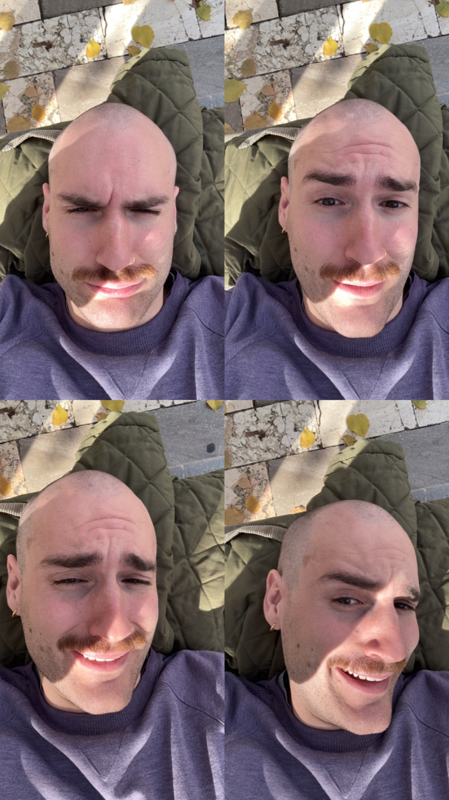

About · Simone Carducci
Curo progetti culturali dall'idea al pubblico: un magazine, un collettivo, un archivio su pellicola.

[DA VERIFICARE: "cresciuto a Roma" è dedotto da liceo e primo lavoro a Roma. Ultimo paragrafo pensato per la candidatura al Circolo del Design.]
Da dove vengo
Sono cresciuto a Roma e ho fatto il liceo artistico, indirizzo architettura e ambiente. A diciotto anni lavoravo già nelle pubbliche relazioni: guidavo un piccolo team che organizzava serate per locali, club e stabilimenti, e ho lavorato accanto ad artisti come Achille Lauro, Ludwig, Il Tre e Carl Brave. Lì ho imparato che un evento riesce prima di tutto quando sono le persone giuste a sentirsi invitate.
Gli anni in giro
Poi ho passato anni dietro un bancone, tra Bologna, i resort Club Med in Svizzera, Portogallo e Italia, e i ristoranti di Torino, dove sono diventato sommelier (WSET Level 2, con distinction). È stato un apprendistato diverso: ascoltare chi hai davanti, raccontare in pochi secondi il lavoro di un produttore, curare ogni dettaglio della presentazione. Ho imparato l'inglese e il francese, e oggi parlo anche spagnolo.
Quello che faccio oggi
Nel luglio 2024 ho fondato Bohème Magazine, di cui curo la direzione artistica ed editoriale: un magazine indipendente sull'arte emergente e sulle opportunità per artisti, che in 26 mesi ha raccolto da zero oltre 5.000 persone e 1,47 milioni di visualizzazioni. Per tenerlo aggiornato ho progettato Vedetta, un sistema che legge e verifica i bandi di oltre 75 enti culturali. Nel 2026 ho curato la direzione creativa del Colectivo modì: identità visiva, comunicazione, serate e DJ set filmati, un podcast.
Cosa studio
Sono al terzo anno di Beni culturali all'Università di Torino, indirizzo storico-artistico, con un Erasmus all'Universidad de Granada. Nel 2024 ho preso il certificato Google in UX Design. Mi interessano soprattutto l'arte del Novecento e quella contemporanea. Fotografo su pellicola da anni: l'archivio è il modo in cui guardo le cose prima di raccontarle.
Cosa cerco
Un posto dove il progetto culturale e il progetto di design si parlino, e dove mettere insieme quello che so fare: curare un'idea, darle una forma, trovarle un pubblico.
- Ambiti
- Editoria, eventi, progetti culturali, fotografia analogica
- Competenze
- Direzione artistica ed editoriale, art direction, organizzazione di eventi, comunicazione e social media, scrittura ed editing, UX design, progettazione di strumenti digitali con l'AI
- Strumenti
- Figma, Adobe Photoshop, Lightroom e InDesign, Final Cut Pro, Meta Business Suite, Claude Code, Pacchetto Office
- Lingue
- Italiano (madrelingua), inglese e francese (avanzato), spagnolo (intermedio)
- Formazione
- Beni culturali, Università di Torino (in corso) · Erasmus, Universidad de Granada · Google UX Design Certificate (2024) · WSET Level 2 (2023)